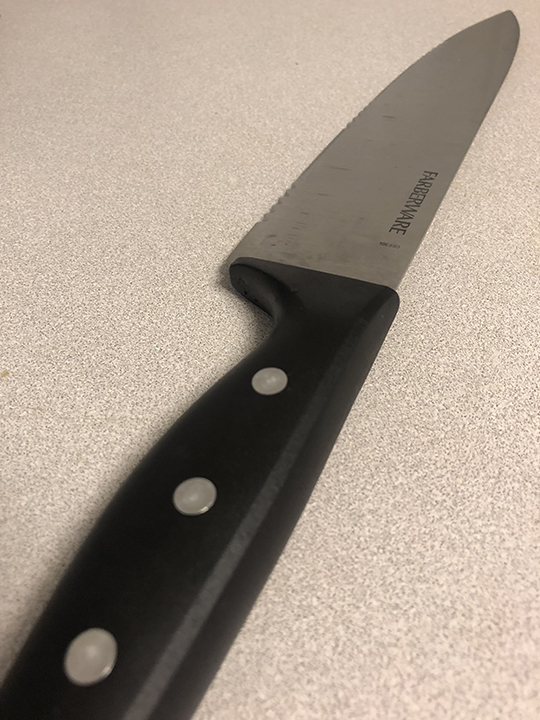

The knife’s utility is to cut and divide things, however its use can be on different mediums. It is necessary to use a form of the knife to make anything in life, from opening boxes, cutting building materials, used in surgery or really shaping anything into a desired form. In its most domestic form ads shown in the picture, it is used for cooking and eating utensils.